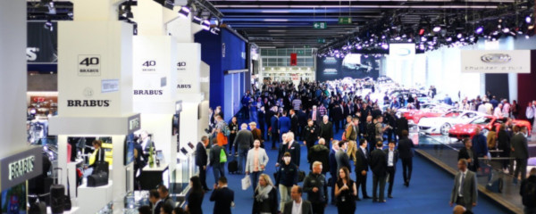

Desde el día 10 de septiembre del 2019 hasta el día 22 del mismo mes.
Feria de Fráncfort y Hanover Fairground, Alemania.
Como cada dos años, el Salón de Frankfurt 2019 abre sus puertas y las marcas más importantes de todo el mundo muestran en esta feria sus últimos prototipos y los modelos de producción que llegarán al mercado en los próximos años. El Salón del Automóvil de Frankfurt 2019 permanecerá abierto hasta el 22 de septiembre. Entre sus novedades destacadas están el Audi RS 6 Avant 2020 o el nuevo BMW M8. Por no hablar de otros espectaculares modelos ya confirmados, como el Land Rover Defender 2020 o el Mini John Cooper Works GP 2020.
Además de los modelos antes mencionados, el Salón de Frankfurt 2019 promete una serie de novedades también importantes. Una de las novedades más importantes iba a ser el nuevo Volkswagen Golf 8, sin embargo, la compañía alemana ya ha confirmado que no será presentado en Frankfurt. En su lugar, la estrella del stand ha sido el nuevo Volkswagen ID.3, su vehículo totalmente eléctrico. Otro vehículo ecológico del Grupo Volkswagen, el Porsche Taycan, también ha hecho acto de presencia.
Se sumará el Mercedes EQS o el Mercedes GLB, así como el nuevo Opel Corsa-e (totalmente eléctrico), el renovado Renault Captur 2020 y la nueva generación del Hyundai i10 2020.